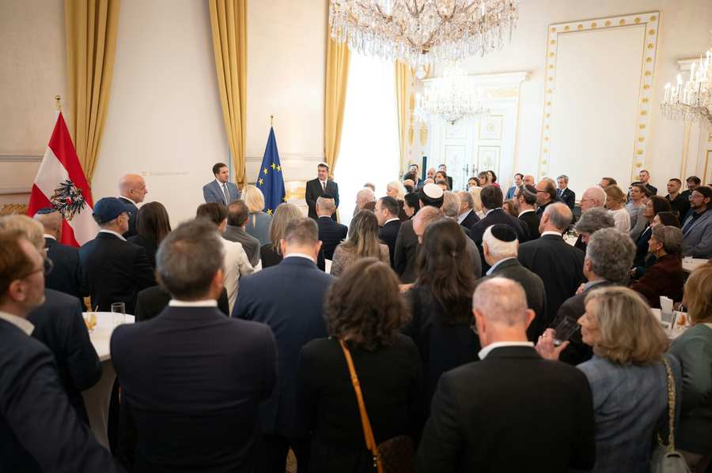
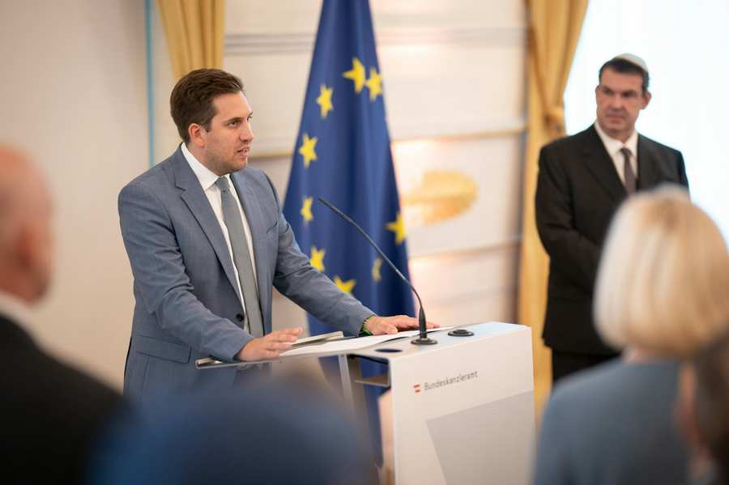
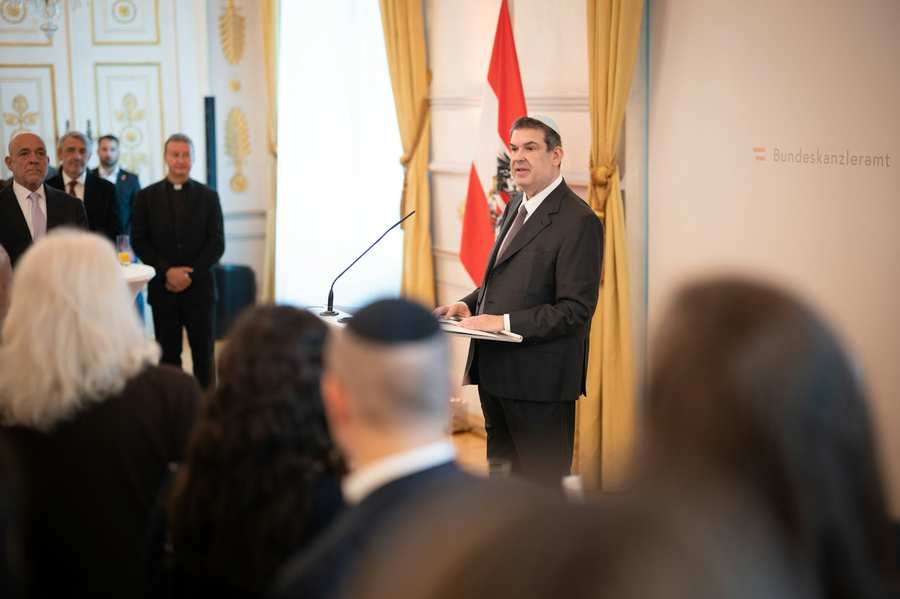

Bildquelle: BKA/Gruber
Anlässlich des jüdischen Neujahrs 5787 lud Staatssekretär Alexander Pröll am 24. September Vertreterinnen und Vertreter der jüdischen Gemeinschaft sowie Gäste aus Politik, Religion, Gesellschaft und Diplomatie zum traditionellen Rosch-Haschana-Empfang ins Bundeskanzleramt. IKG-Präsident Oskar Deutsch erinnerte dabei an die Wiedereröffnung des Wiener Stadttempels und mahnte zugleich zu einem entschlossenen Vorgehen gegen Antisemitismus.

Rosch HaSchana steht für Neubeginn, Rückschau und den Blick auf das kommende Jahr. Diese Gedanken standen auch im Mittelpunkt des Empfangs, zu dem der für die Bekämpfung von Antisemitismus zuständige Staatssekretär Alexander Pröll am Donnerstag ins Bundeskanzleramt eingeladen hatte.
„Rosch HaSchana steht für Neubeginn, Zuversicht und den Blick auf das kommende Jahr. Ich wünsche allen Jüdinnen und Juden in Österreich ein gutes, friedliches und süßes neues Jahr. Jüdisches Leben gehört selbstverständlich zu Österreich. Es soll hier sicher, sichtbar und mit Zuversicht gelebt werden können. Dafür trägt der Staat Verantwortung – und dafür müssen wir jeden Tag eintreten“, so Staatssekretär Alexander Pröll.
Der Rosch-HaSchana-Empfang im Bundeskanzleramt hat sich in den vergangenen Jahren zu einem regelmäßigen Zeichen der Verbundenheit mit jüdischem Leben in Österreich entwickelt. Im Mittelpunkt stehen dabei vor allem Begegnung und Austausch mit Vertreterinnen und Vertretern der jüdischen Gemeinschaft.
Oskar Deutsch: Positiver Beginn des Jahres 5787
IKG-Präsident Oskar Deutsch nahm in seiner Ansprache insbesondere auf ein für die Wiener jüdische Gemeinde bedeutendes Ereignis Bezug: die Wiedereröffnung des Stadttempels nach umfassender Restaurierung und Sanierung.

„In stürmischen Zeiten hat das Jahr 5787 ausgesprochen positiv begonnen – mit der Wiedereröffnung des 200 Jahre alten Stadttempels. Möglich war das, weil die Stadt Wien und die Bundesrepublik Österreich je ein Drittel der Kosten übernommen haben. Vielen Dank“, sagte Oskar Deutsch, Präsident der Israelitischen Kultusgemeinde Wien.
Deutsch führte aus, dass Rosch Haschana zur Umkehr einlade: „Das gilt für alle. Wenn Israel dämonisiert wird, landet das irgendwann bei uns: in Schulen, auf der Straße, online, vor unseren Einrichtungen werden Juden und Jüdinnen angefeindet, weil andere über Israel Unwahrheiten verbreiten. Auch für politische Parteien, deren Nähe zum Nationalsozialismus nicht mit der Gründung endete, gibt es die Möglichkeit zur Umkehr. Sie beginnt mit einem aufrichtigen Umgang mit der eigenen Geschichte und mit der Verantwortung, die daraus folgt – und nicht mit Diffamierungen der jüdischen Gemeinde in Österreich.“
Der Kampf gegen Antisemitismus war auch ein zentraler Schwerpunkt der Ansprache von Staatssekretär Pröll. Österreich habe mit der Nationalen Strategie gegen Antisemitismus 2.0 seine Maßnahmen in diesem Bereich weiter ausgebaut. Vorgesehen sind 49 Maßnahmen bis zum Jahr 2030, die unter anderem Prävention und Bildung, den Schutz jüdischen Lebens sowie die Bekämpfung von Antisemitismus im digitalen und öffentlichen Raum umfassen.
„Unser Ziel darf sich nicht darin erschöpfen, jüdisches Leben vor Antisemitismus zu schützen. Wir wollen ein Österreich, in dem Jüdinnen und Juden ihre Religion, ihre Kultur und ihre Traditionen selbstverständlich und offen leben können. Ein Empfang wie dieser ist deshalb auch ein Zeichen dafür, was wir bewahren und stärken wollen: lebendiges jüdisches Leben mitten in unserer Gesellschaft“, so Pröll abschließend.